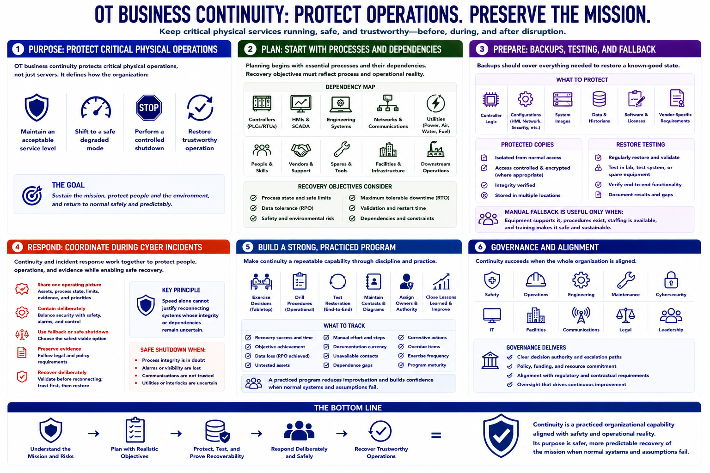

Course Summary and Key Takeaways
Connecting to LMS... Progress: in progress

Narration
OT business continuity protects critical physical operations, not just servers. It defines how the organization maintains an acceptable service, shifts to a safe degraded mode, performs a controlled shutdown, and restores trustworthy operation after disruption.
Planning begins with essential processes and their dependencies: controllers, HMIs, engineering systems, networks, utilities, people, vendors, spares, facilities, and downstream operations. Recovery objectives must reflect process state, safety, data tolerance, and the real time needed for validation and restart.
Backups should cover logic, configurations, system images, data, software, licenses, and vendor-specific requirements. Protected copies and restore testing prove recoverability. Manual fallback is useful only when equipment, procedures, staffing, and training make it safe and sustainable.
During cyber incidents, continuity and incident response coordinate containment, fallback, safe shutdown, evidence preservation, and deliberate recovery. Speed alone cannot justify reconnecting systems whose integrity or dependencies remain uncertain.
Strong programs exercise decisions, drill procedures, test restoration, maintain contacts and diagrams, assign owners, and close lessons learned. Continuity is a practiced organizational capability aligned with safety and operational reality. Its purpose is safer, more predictable recovery of the mission when normal systems and assumptions fail.